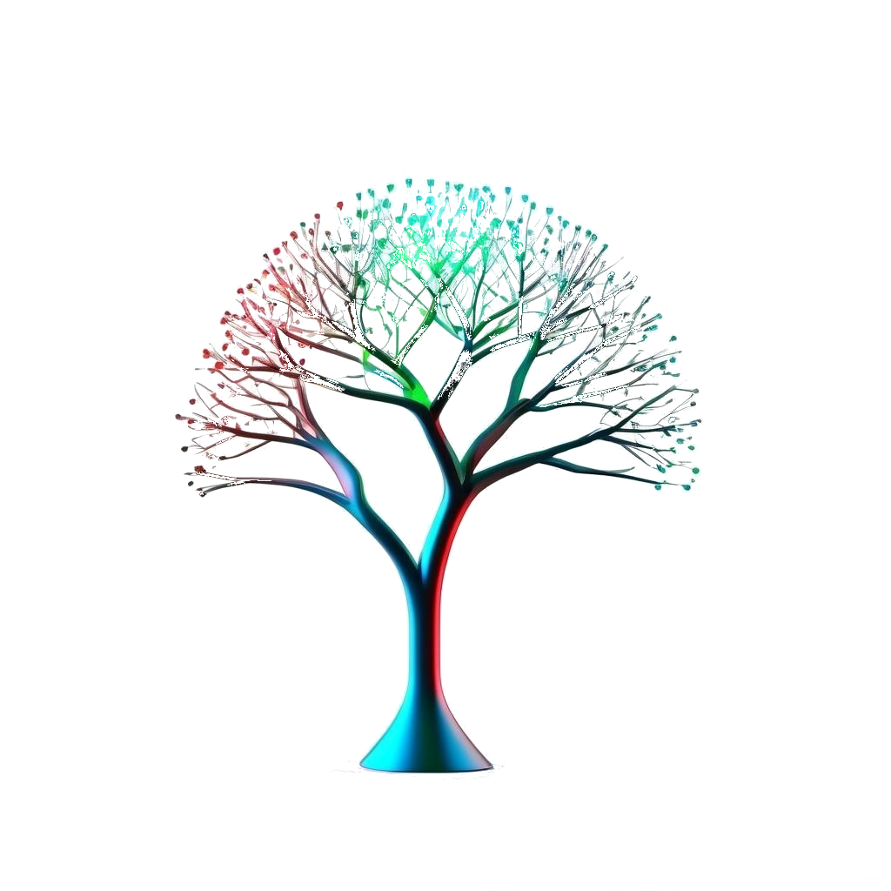

Czy masz już gotowy temat i znasz swój cel ale nie wiesz jak zacząć? Odczuwasz frustrację z powodu swojej bezradności? Nie przejmuj się już tym więcej! Dzięki naszemu rozwiązaniu możesz szybko rozpocząć działanie i czerpać inspirację przy użyciu naszego produktu.
Wystarczy wpisać temat i cel projektu, a w kilka chwil otrzymasz kompletny szablon wraz z inspirującymi wstępami, treściami głównymi i efektownymi zakończeniami. To więcej niż tylko narzędzie - to przyspieszenie Twojej kreatywności i skuteczności. Gotowy, by zabrać się do dzieła? Odkryj, jak łatwo możesz osiągnąć swoje cele dzięki naszej platformie!